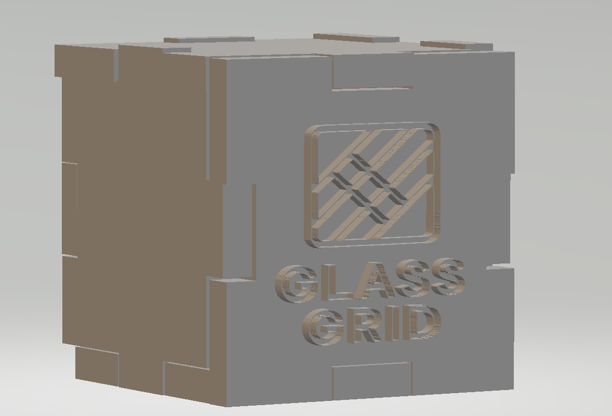

Rastrgrafika:
GIMP:

GIMP ir bezmaksas atvērtā koda programma, ko izmanto digitālo attēlu rediģēšanai, uzlabošanai un izveidei. Tāpēc datorikas stundu laikā mēs apskatījām vairākas programmas funkcijas - galvenos zīmēšanas rīkus, darbu ar slāņiem, apgabalu atlasīšanu, - kā arī izveidojam GIF mūsu individuālājai tēmai (skat. Individuālā tēma).
Vektorgrafika:
Inkscape:
Tinkercad:

Inkscapeir bezmaksas vektoru redaktors. Šajā programmā mācību laikā mēs apguvām vektoru rediģēšanas pamata prasmes, piemēram, figūru zīmēšanas rīkus, darbu ar paneļiem un paletēm, kā arī vektoru grafikas rediģēšanu un sakārtošanu. Vektoru rediģēšanas programmas izmanto logotipu un cita formāli lietišķā dizaina izveidē, tāpēc mūsu uzdevums bija atbilstošs – logotips uzņēmumam "Rumba".

Turklāt mēs apguvām Tinkercad, kas mums sniedza pamata izpratni par darbu ar 3D modeļiem, ļaujot saprast to pagriešanu, mērogošanu, grupēšanu (atvērumu veidošanu) un eksportēšanu turpmākai 3D drukāšanai. Ar šīs programmas palīdzību mēs izstrādājām 3D kubveida modeli ar iepriekš programmā Inkscape izveidoto logotipu.
Video:
ClipChamp: Atvērt ClipChamp video
Arī ieguvām ieskatu video montāžas programmā ClipChamp, kurā mēs praktiskā darbā izmantojam skaņas rediģēšanu, video sadalīšanu, kā arī pāreju efektus, izveidojot video par slēpošanu no vairākiem atsevišķiem fragmentiem. Pilnīgi izstrādājot kubiņa 3D modeli, katrai grupai tika izveidots video par izstrādāšanas darba gaitu, tāpēc video izveidošanai tika izmantota cita montāžas programma - CapCut (Atvērt video par 3D kubiņa veidošanu).
MS programmas:
Ms Word:
Ms Excel: Excel

Ziemas laikā datorikas stundās mēs tikpat detalizēti iepazināmies ar divām Microsoft programmām – Microsoft Word un Microsoft Excel. Programmā Microsoft Word mēs sīki izskatījām lielāko daļu rīkjoslas funkciju, kā arī uzzinājām vairāk par pareizu lietošanu un formālajiem noteikumiem šīs programmas izmantošanā. Runājot par Microsoft Excel, mēs iemācījāmies saglabāt, analizēt un šķirot datus, veikt sarežģītus aprēķinus, izmantojot formulas, kā arī vizualizēt informāciju, izveidojot grafikus un diagrammas.
- formaremade
- dzerdaudzremade
- dzerremade